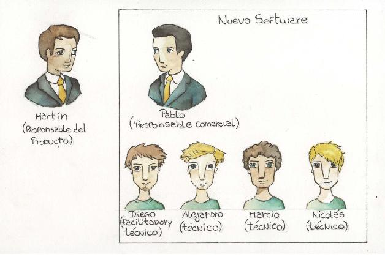
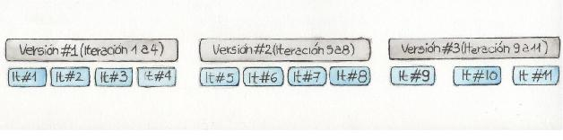
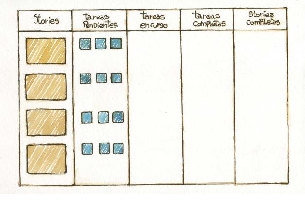
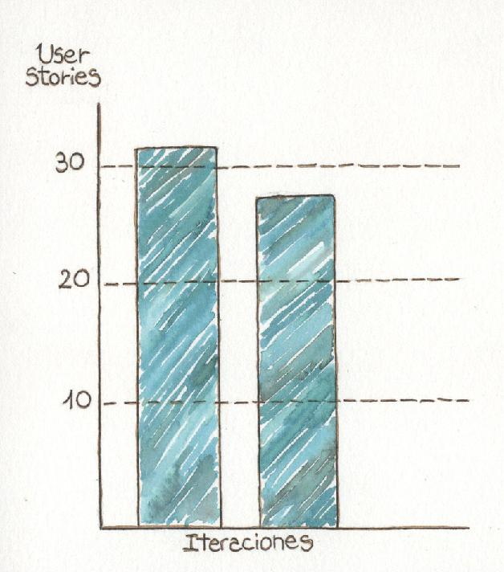
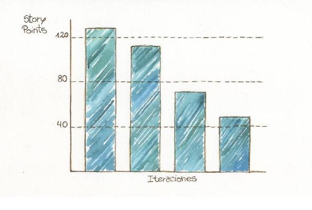

Construyendo con calidad día tras día
—y como siempre en nuestros proyectos, no vamos a entregar nada que no cumpla con los más altos estándares de calidad –afirmó el director en la reunión de inicio de proyecto, y agregó– Como además tenemos un cronograma de proyecto extremadamente ajustado, nos estará asistiendo el equipo de control de calidad de la organización.
En otro momento de la presentación, el director se dirigió al gerente de proyecto:
—Poncio, tu tarea será crítica, fuiste elegido para este proyecto por tu capacidad de entender las directivas de la gerencia. Las fechas del proyecto y sus alcances son inamovibles, debemos entregar las funcionalidades a tiempo a toda costa. Luego tendremos tiempo, junto con el equipo de control de calidad, de emprolijar las cosas.
Una parte del equipo intentó disimular sus caras largas. Los más experimentados ni se molestaron, nadie podía pretender que estén de acuerdo con la forma de trabajo que se les planteaba. Todos vislumbraron un proyecto tedioso y del cual les costaría sentirse orgullosos.
A ningún equipo le gusta hacer las cosas mal. En ocasiones hay que tomar algún atajo, que generará una deuda técnica156, pero en general todos esperan que en sus proyectos esto sea una excepción, y no una directiva de trabajo.
Pretender lograr un producto de calidad utilizando como herramienta principal una etapa de control de calidad al final es imposible, además de tedioso y desmoralizante. En este capítulo veremos cómo se enfoca la calidad en los métodos ágiles, donde no se controla en una etapa separada del desarrollo, sino que se busca que las diferentes prácticas contribuyan a construir software de calidad, evitando defectos y facilitando encontrarlos lo más cercanamente posible al momento en el que se introducen.
Qué entendemos por calidad
Algunas definiciones
Según la Real Academia Española, la calidad es “Propiedad o conjunto de propiedades inherentes a algo, que permiten juzgar su valor”.
Según Pressman [Pressman 1998], la calidad de software es la concordancia con los requisitos funcionales y de rendimiento explícitamente establecidos, con los estándares de desarrollo explícitamente documentados, y con las características implícitas que se espera de todo software desarrollado de manera profesional.
La definición oficial del Instituto de Ingenieros Eléctricos y Electrónicos (IEEE, Std. 610-1990) es “La calidad del software es el grado con el que un sistema, componente o proceso cumple los requerimientos especificados y las necesidades o expectativas del cliente o usuario”.
Calidad intrínseca y extrínseca
En este capítulo vamos a diferenciar dos aspectos en los cuales podemos dividir las características de calidad del software. Un aspecto es el extrínseco, referido a las características también llamadas externas, que se ven desde afuera del sistema. Según Sommerville [Sommerville 2005], estas incluyen:
• Funcionalidad.
• Seguridad.
• Portabilidad.
• Usabilidad.
• Fiabilidad.
• Eficiencia.
Los aspectos intrínsecos, también llamados internos, son los inherentes al diseño del sistema que no pueden ser percibidos en forma directa desde afuera, o sea sin analizar técnicamente al sistema. Estos incluyen, también según Sommerville [Sommerville 2005]:
• Comprensión.
• Verificabilidad157.
• Adaptabilidad.
• Reutilización.
• Modularidad.
• Robustez.
• Complejidad.
Calidad en un proyecto ágil
En el desarrollo ágil no hay una práctica en particular que se ocupe de la calidad, sino que sus diferentes aspectos se trabajan a través del conjunto de las prácticas esenciales.
A continuación mostraremos las diferentes prácticas que se ocupan de la calidad del producto de software que se produce en un entorno ágil.
Cliente presente
Como vimos en el capítulo “¿Quién manda a quién?”, al tener el cliente presente en un proyecto, el equipo puede tener respuestas oportunas para tomar decisiones. Permite una validación constante de que el proyecto, más allá de estar cumpliendo con las especificaciones, cumple con sus necesidades.
Para esto es necesario que el cliente vele por las necesidades reales y no por el cumplimiento de los compromisos que pudo haber asumido el equipo en determinado momento. Este cliente debe ser decidido a la hora de explicitar cualquier diferencia entre lo contratado y las necesidades que deberá cumplir el software terminado, para que las consecuencias de estos cambios se puedan atender lo más temprano posible. Es su responsabilidad todo lo referente a la priorización de requerimientos y asegurar que lo que se construye aporte el mayor valor posible.
Desarrollo guiado por pruebas
Si bien esta práctica no es exclusiva del desarrollo ágil, es una parte fundamental de este y ha recibido un gran empuje por los métodos ágiles (sobre todo XP). Como vimos en el capítulo “Probar, probar, probar” esta práctica permite crear software enfocado en cumplir las necesidades que se plantean, y que el diseño se pueda mejorar a través de refactorizaciones a medida que avanza el proyecto.
El desarrollo guiado por pruebas de aceptación extiende este concepto y enfoca el desarrollo en el cumplimiento de las necesidades del proyecto. De esta manera, se evitan desarrollar características no solicitadas, se mejoran las especificaciones y se logran acuerdos sobre la base de un entendimiento compartido.
Integración continua
Esta práctica, que a veces se utiliza también en el marco de procesos tradicionales al igual que el desarrollo guiado por pruebas, ha sido impulsada en forma importante por el agilismo como parte integral de su filosofía, es una parte fundamental de un proyecto ágil. La integración continua, además de garantizar que el producto construido por el equipo funciona y pasa las pruebas, permite a cada programador estar constantemente sincronizado con el desarrollo del resto del equipo.
Esta práctica mejora la calidad del producto en desarrollo, permite al equipo enfocarse en otras tareas y reduce el tiempo de detección de errores y por lo tanto del costo de su corrección. En efecto, no solo automatiza el proceso de integración sino que le brinda un marco a la integración y el despliegue del producto que se desarrolla, ayudando a cada miembro a integrar sus desarrollos en forma ordenada y coherente con las del resto.
Revisión de la iteración
Al final de cada iteración se hace una presentación de lo realizado hasta el momento. Esta práctica provee un hito claro en el cual validar el avance con el cliente. El hecho de realizarse en forma frecuente evita que el trabajo se desvíe de los verdaderos objetivos del proyecto.
En conjunto con el cliente presente en el equipo, la exposición del proyecto en forma frecuente mejora la calidad del producto, al incorporar una instancia de validación fundamental.
Programación de a pares
De alguna manera, la programación de a pares es parecida a una revisión de código constante. Esta práctica ayuda a generar código de calidad y, sobre todo, altamente legible y mantenible. Al fin y al cabo, cada línea de código es vista por al menos dos personas desde su misma creación.
Este es un claro ejemplo de cómo en un proyecto ágil no es necesaria una etapa dedicada a controlar la calidad. En el caso de la calidad del código, es revisada desde el momento en que es escrito, y cada vez que es modificado o revisado, en forma continua y como parte natural del desarrollo.
Barry Boehm, en su paper sobre reducción de defectos de software [Boehm 2001], menciona que un 60% de los defectos del código se pueden eliminar durante las revisiones por pares. La programación de a pares es una forma de hacer revisión continua del código.
Retrospectivas
En las retrospectivas158 se tratan todos los conflictos, problemas y oportunidades de mejora detectados en la iteración. A través de ellas se puede mejorar las prácticas que llevamos adelante y ajustarlas para lograr mejores resultados. Esto permite actuar sobre los distintos elementos que afectan la calidad del producto: la interna se ve fomentada por la discusión entre los perfiles más técnicos, mientras que la externa resulta favorecida por la presencia del cliente.
Al realizarlas luego de cada iteración, tenemos la oportunidad de implementar mejoras y corregir problemas antes de que se arraiguen en el equipo y sea muy difícil o muy tarde cambiarlo. Una retrospectiva de final de proyecto, si bien es útil para la organización, no sirve de nada a la mejora del proyecto en sí.
Control de calidad tradicional en un proyecto ágil
En un proyecto de desarrollo ágil no tenemos una instancia de control de calidad separada. Más bien, durante el desarrollo, el trabajo sobre una user story159 pasa por diferentes estadios durante una iteración hasta que es terminado. Uno de estos es la prueba de aceptación.
Idealmente, el encargado de realizar estas pruebas es el cliente o el responsable del producto. Como, en general, el tiempo del cliente es escaso, en muchos proyectos se recurre a la ayuda de testers. Ahora bien, hemos visto que el trabajo con un equipo de control de calidad externo al equipo no es, en líneas generales, compatible con el desarrollo ágil, al menos en el ciclo normal del proyecto.
En cambio, en nuestra experiencia, en un equipo mediano o grande, tener un miembro con la tarea exclusiva de probar lo desarrollado es una práctica positiva. En este caso, suele haber una persona, a veces denominado tester embebido en el equipo, que no solo encuentra defectos, sino que se sienta con los desarrolladores a reproducir y entender el problema. De esta manera, aunque puede ser un tester de oficio, forma parte del equipo como cualquier otro, y no es percibido como alguien externo. Cuando es posible, el tester trabaja junto con el equipo técnico para automatizar las pruebas y hacer la tarea de testing lo más eficiente posible.
Esta práctica dista enormemente del control de calidad habitual en el desarrollo tradicional, en el cual se envía una versión de software a un equipo de testers para que realicen una gran prueba de regresión, y que luego haya una batalla para determinar qué cosa es un defecto y qué no. Habiendo otras herramientas para atrapar errores conocidos, el tester puede dedicar tiempo a tareas como pruebas exploratorias.
El foco de la calidad en el desarrollo ágil
En este libro mostramos que no hay una actividad o práctica ágil referida específicamente a controlar la calidad. En el desarrollo ágil, la calidad es más bien una cualidad que se logra en forma indirecta e implícita. Las diferentes prácticas del desarrollo ágil se enfocan en la calidad desde la creación del software, permitiendo la revisión del producto desde sus diferentes perspectivas y su mejora constante.
De esta forma, el desarrollo ágil ve la calidad como algo que atraviesa todas las actividades y productos que desarrolla. El mantener al mínimo la documentación y elementos que no son el producto que se deberá entregar, centrándose en las tareas que agregan valor al producto, hacen imprescindible tomar un enfoque de calidad en todo lo que se hace, ya que todo tendrá impacto directo sobre lo que entregamos al cliente.
En el clásico contemporáneo Zen y el arte de mantenimiento de la motocicleta [Pirsig 1974], Robert Pirsig se expresa sobre la calidad como la unión entre los mundos objetivo y subjetivo. Propone que la calidad en sí misma no puede definirse, pero para entenderla la divide en estática (lo que puede ser definido) y dinámica (lo que solo puede percibirse), no como una dualidad, sino como diferentes aspectos de algo único.
En el desarrollo de software hay elementos que podemos clasificar como aspectos de calidad estática (calidad del código, cobertura de las pruebas, ajuste a los requerimientos) y aspectos de calidad dinámica (experiencia del usuario, usabilidad, claridad del código). Los primeros son claros para alguien de formación técnica, los segundos son más complicados de definir y suelen percibirse aun antes de medirse.
El enfoque ágil, como hemos visto, se ocupa de calidad en todos sus aspectos, y como parte de cada una de sus prácticas. Trata al software como uno solo, sin diferenciar entre los elementos internos y externos de la calidad, entendiendo que ambos confluyen en un único producto del desarrollo.
En resumen
Es habitual en los proyectos oír que no se tomarán atajos en cuanto a la calidad. También es habitual que eso sea solo una expresión de deseo. En el desarrollo ágil, al estar implícita la calidad en sus diferentes prácticas, resulta más natural desarrollar productos de calidad.
La naturaleza iterativa y tener algo completo160 al final de cada iteración, facilitan hacer un trabajo de calidad paso a paso en el proyecto.
El cliente presente que toma las decisiones y aprueba los alcances en cada iteración, permite asegurar la calidad extrínseca, permitiendo detectar desvíos respecto a las expectativas en forma temprana para hacer los ajustes necesarios.
Las diferentes prácticas de desarrollo (desarrollo guiado por pruebas, programación de a pares, integración continua) permiten trabajar sobre la calidad intrínseca en forma constante. Y cuando se decide tomar atajos, nos brindan herramientas para poder pagar la deuda técnica acumulada.
De esta manera, si conseguimos que nuestro equipo adopte a conciencia las prácticas mencionadas, la construcción con calidad pasará a formar parte de la rutina de nuestro trabajo.
A lo largo de los capítulos anteriores hemos presentado la esencia de los métodos ágiles y diversas técnicas y herramientas concretas. En este capítulo uniremos todo lo leído en un relato de lo que sería el desarrollo de un proyecto. Si bien es ficticio, está basado en experiencias vividas por los autores, con lo cual bien podría ser un caso real.
Como hemos mencionado, no hay limitaciones respecto del tamaño de los proyectos que se pueden llevar a cabo utilizando métodos ágiles, pero más allá de eso, hemos decidido utilizar el caso de un proyecto chico pues cuanto más grande el proyecto más complejo sería explicarlo. Además, creemos que el tamaño del proyecto elegido permite explicar de forma clara y suficiente las técnicas aquí presentadas.
Organización del proyecto
Definición del proyecto
Martín Ventor es un emprendedor que ya tiene en su haber varios casos de éxito. Hace un tiempo se le ocurrió un nuevo producto de software y luego de analizar varios proveedores, se inclinó por la recomendación de un amigo y decidió contactar a la empresa Nuevo Software para construir su producto. El primer contacto de Martín fue Pablo, una persona del área comercial, pero con sólida formación técnica. En la primera reunión, Martín no tenía muy en claro el alcance del producto que quería construir, pero sí la fecha en que lo necesitaba. Pablo escuchó atentamente la idea de Martín asegurándose de entender la visión de negocio y el rol que el software a construir jugaba en dicho contexto.
A la semana siguiente, Martín volvió a las oficinas de Nuevo Software para otra reunión, pero en esta ocasion también estaba el equipo de técnicos que en caso de concretarse el proyecto, serían los encargados de la construcción. Dicho equipo estaba formado por Alejandro, Diego, Marcio y Nicolás. La reunión duró unas dos horas y estuvo enfocada en analizar el software a construir. Los elementos de trabajo: notas autoadhesivas de distintos colores, cinta de papel, fichas bibliográficas, una pizarra, varios marcadores y un mazo de cartas de planning poker.
Trabajaron utilizando Visual Story Mapping (VSM), un técnica de análisis totalmente nueva para Martín, pero con la cual todo el equipo estaba familiarizado. Una vez el VSM estuvo completo, se fueron repasando una a una todas las stories identificadas, escribiendo cada una en una ficha bibliográfica, ordenándolas sobre la mesa en base a la importancia establecida por Martín. Mientras se hacía esto, se hablaba brevemente sobre el alcance de cada story y en algunos casos uno de los técnicos agregaba anotaciones al dorso de la story card. Como resultado de la reunión obtuvieron dos artefactos: un Visual Story Map y Product backlog. En este punto se dio por concluida la reunión, Martín y Pablo se retiraron, pero los técnicos se quedaron en la misma sala para realizar una estimación de orden de magnitud. Una vez finalizada, invitaron otra vez a Pablo para comunicarle el resultado de la estimación y para armar una lista de riesgos. Con estos dos artefactos, Pablo armaría la propuesta de proyecto para Martín. El alcance inicial del proyecto estaba dado por 32 user stories, con una complejidad equivalente a 130 story points. El equipo que realizó la estimación sería quien llevaría a cabo el proyecto. Dado que los miembros del equipo ya habían trabajado en conjunto en proyectos de características similares161, acordaron tomar como velocidad inicial: 17 story points / iteración semanal.
Luego de un par de idas y vueltas entre Martín y Pablo, se estableció la fecha de inicio del proyecto para el lunes siguiente. La modalidad de contratación se estableció como Tiempo y Materiales debido a que se trataba de un proyecto innovador con un gran nivel de incertidumbre.
Se consideró una estimación inicial de duración entre diez y doce semanas. El equipo estaría formado por los cuatro técnicos que realizaron la estimación y Diego en el rol de facilitador.
Figura 19.1. Involucrados en el proyecto

Planificación de alto nivel
Previo al inicio de proyecto, se pactó una reunión de planificación de versiones. En dicha reunión se trabajó sobre el backlog de producto, ya priorizado y estimado, para armar el plan inicial de versiones. Al mismo tiempo, el equipo explicó la dinámica de trabajo e interacción que utilizarían durante el proyecto. Si bien Pablo ya había explicado algo de esto a Martín, Diego se encargó de formalizar ciertas cuestiones respecto de las expectativas de interacción que el equipo necesitaba para poder construir un producto de valor. El equipo trabajaría con iteraciones semanales, se fijó un horario para las reuniones de planificación a realizarse al comienzo de cada iteración (todos los lunes por la mañana) y lo mismo se hizo para las reuniones de revisión, a realizarse al final de cada iteración (todos los viernes por la tarde). Se acordó que las reuniones de planificación durasen a lo sumo de una hora, procurando que fuesen presenciales. La duración de las reuniones de revisión también sería una hora, pudiendo ser en forma remota. Al mismo tiempo, se esperaba que Martín estuviera disponible para consultas en forma frecuente más allá de las reuniones de planificación y revisión. También el equipo acordó hacer una reunión de retrospectiva los viernes por la tarde cada dos semanas.
El plan de versiones quedó conformado con tres versiones. La primera sería al final de la cuarta iteración.
Figura 19.2. Plan de versiones

Ejecución y control
Planificación de iteración
Luego de un mes desde el primer contacto con Martín se comenzó con la construcción del producto. El lunes a las 9.30 de la mañana, todos los miembros del equipo y Martín se encuentran reunidos en una sala de reunión de Nuevo Software. En una pared está pegado el VSM que hicieron tiempo atrás. En otra pared hay una pizarra. Sobre la mesa, un mazo de cartas de planning poker, varios mazos de notas autoadhesivas de diversos colores y marcadores.
El objetivo de la reunión es planificar el trabajo a realizar durante la iteración. Martín ha seleccionado 5 user stories de las correspondientes a la primera versión, las cuales suman un total de 18 story points. Se van leyendo cada una de las user stories y especificando sus condiciones de aceptación al dorso de cada story card. Al mismo tiempo el equipo va identificando las tareas de ingeniería asociadas a cada user story. Durante este proceso el equipo descubre que una de las user stories es, en realidad, una épica y con el acuerdo de Martín deciden dividirla en 3 user stories. Con esto, las 5 user stories elegidas inicialmente por Martín se convierten en 7, con un peso total de 21 puntos. Dado que el equipo ha asumido una velocidad de 17, Martín debe volver a priorizar las 7 stories pues el equipo no tiene posibilidad de trabajar en todas. Finalmente Martín selecciona 4 user stories por un valor total de 16 puntos. El punto sobrante se utilizaría para algunas tareas de ingeniería de inicio del proyecto (creación del repositorio de código, configuración del servidor de integración continua, etc.). Antes de finalizar la reunión, se actualiza el backlog y el story map agregando las nuevas stories detectadas. El equipo arma el tablero de la iteración, pegando las stories cards que conforman el compromiso de la iteración. También agregan asociado a cada user story una nota autoadhesiva para cada una de las tareas de ingeniería identificadas. Una vez completo el tablero de la iteración, el equipo comenzó a trabajar en forma conjunta en algunas tareas de ingeniería generales del proyecto. Esta vez, a los ya mencionados elementos de trabajo (notas autoadhesivas, pizarra, etc.), se sumó una computadora portátil conectada a un proyector.
Iteración 0
Algunos equipos suelen denominar la primera iteración como iteración 0 y enfocarla en cuestiones de organización/configuración del proyecto como ser: definición de la arquitectura base, configuración de ambientes, creación del repositorio de código y demás herramientas de soporte, etc.
Al cabo de dos horas más de trabajo, el equipo ya había definido algunas cuestiones de diseño generales, había generado la estructura base de la solución de código, creado el repositorio de código y configurado el servidor de integración continua. El siguiente paso fue actualizar el tablero para reflejar el estado de las tareas recién completadas y repartir las que cada miembro continuaría trabajando.
Figura 19.3. Tablero de iteración

El reparto es rápido: no más de 10 minutos y cada miembro vuelve a su puesto de trabajo para dedicarse a la tarea elegida. Así se fue el primer día de la primera iteración del proyecto.
Un día cualquiera
Como de costumbre, a las 9:30 todo el equipo se reúne de pie frente al tablero para comenzar con la reunión diaria. Cada miembro cuenta lo que hizo el día anterior, lo que hará hoy y si tuvo algún impedimento. A continuación, un extracto de la conversión de dicha reunión:
Marcio: ayer completé la story de registración de usuario y hoy pensaba trabajar en la story modificación de perfil. Me gustaría programar en pareja con Ale o Diego, pues vi que requiere unas validaciones en JavaScript y no me doy mucha maña con ello.
Alejandro: no hay problema, podemos trabajarlo juntos.
Marcio: perfecto, muchas gracias. Alejandro: de nada.
Marcio: bueno, eso es todo, no tengo impedimentos. Diego: ayer trabajé en la story de resumen de transacciones, terminé la lógica de consulta y hoy espero completar la vista. Como impedimento, aún no logré que Martín me diera feedback sobre la story de anulación de transacción.
Nicolás: Martín va a venir esta tarde pues quiere hablar con Pablo sobre otro proyecto, podemos pedirle a Pablo que al terminar la reunión lo traiga para que veamos ese tema. De todas formas pongamos una nota en el tablero para tener presente esta cuestión.
Diego: está bien, al terminar la reunión pongo la nota y hablo con Pablo. No tengo más nada, tu turno, Ale.
Alejandro: bien, ayer trabajé en la story de búsqueda de producto, el caso base está completo; el trabajo de hoy es agregar soporte para algunas de las variaciones y también voy a estar programando en pareja con Marcio para hacer la vista de la story de modificación de perfil.
A medida que cada miembro va hablando, actualiza, de ser necesario, el tablero, moviendo las tarjetas de una columna a otra.
Una vez finalizada la reunión, Alejandro y Marcio se sientan juntos en la máquina de Marcio para programar en pareja. Diego va a hablar con Pablo para pedir que luego de la reunión con Martín le pida que pase a ver al equipo. Por su parte, Nicolás va a su puesto de trabajo para comenzar a trabajar en una nueva story. Comienza por escribir una especificación ejecutable en lenguaje Gherkin. Mientras hace esto, detecta que uno de los criterios de aceptación de la user story es inconsistente. Entonces, se para y agrega una nota en el tablero en el apartado de impedimentos para recordar hablar sobre este tema con Martín esa misma tarde. El resto de los criterios parecen ser razonables, así que completa la especificación Gherkin y a continuación comienza con la implementación de la user story utilizando TDD.
Dos horas después Nicolás tiene diez pruebas corriendo y con ello ha completado la primera tarea de la story que empezó a trabajar; entonces decide que es un buen momento para subir su código al repositorio. Ejecuta el script que corre todas las pruebas y que verifica que su código cumpla con los estándares de codificación. El script falla casi al instante: hay una clase que no cumple con los estándares de codificación. Entonces identifica la clase, arregla las violaciones y vuelve a correr el script. Esta vez la ejecución es exitosa. Nicolás sube sus cambios al repositorio y se dirige a la sala de estar para tomar un café, pero antes de hacerlo decide esperar a que el servidor de integración continua integre sus cambios para poder ir en paz sabiendo que no ha roto nada. Verde, los cambios han sido integrados correctamente, Nicolás actualiza el tablero y va por su café. Invita a sus compañeros y marchan juntos por un café.
Cierre de iteración
Viernes, día de demo. Como todos los días, a las 9.30, el equipo hace la reunión diaria, en la que cada uno contesta las tres clásicas preguntas. Por la mañana, cada miembro completará las tareas pendientes. Antes del intervalo de almuerzo, se hará el despliegue al ambiente de prueba para la demostración a realizar en la reunión de revisión.
Terminado el almuerzo, a las 14.30, el equipo va directo a la sala de reunión. Diego se encarga de trasladar el tablero de iteración. Como es habitual, allí hay una pizarra, un pack de notas autoadhesivas, un proyector y una computadora. Aún faltan unos 15 minutos para la hora de la reunión, pero el equipo ya está reunido y todo está listo para comenzar en cuanto lleguen el resto de los invitados. Marcio ya repasó la demo y todo ha funcionado correctamente.
Minutos antes de la hora acordada, ya estaban presentes todos los invitados: Martín, el cliente, Germán, su socio, Pablo, el responsable comercial de Nuevo Software que vendió el proyecto y, obviamente, todo el equipo de desarrollo. En esta ocasión, fue Marcio el encargado de facilitar la reunión. En primer lugar, se repasó el compromiso de la iteración, contando el estado actual, y a continuación se hizo una demostración de las funcionalidades desarrolladas. Todo funcionó acorde a lo esperado. El equipo había sido capaz de completar todas las stories comprometidas. Martín hizo algunos comentarios durante la demostración pero todas acotaciones menores principalmente relacionadas a cuestiones estéticas. De todas formas, Diego se encargó de tomar nota de ellas. Si bien la reunión estaba agendada de 30 minutos, la misma se prolongó unos 15 minutos más debido a los comentarios de Martín, que motivaron diversas conversaciones. La reunión de planificación estaba agendada para el lunes siguiente, pero dado que tanto Martín como el equipo tenían tiempo disponible, decidieron hacerla a continuación.
Finalizada la reunión de demostración, se hizo un intervalo para aprovisionarse de café. A continuación Martín y el equipo comenzaron con la planificación de la siguiente iteración. Esta vez, las 5 stories seleccionadas por Martín sumaban 18 puntos y si bien la velocidad en la iteración anterior había sido de 17, el equipo, luego de analizar las stories, se sentía capaz de completarlas, así que asumió compromiso por los 18 puntos. La reunión de planificación terminó alrededor de las 4.30 de la tarde. Martín se retiró y el equipo se quedó actualizando el tablero de iteración, el burndown chart y marcando en el story map aquellas stories que habían sido completadas durante la iteración recién terminada.
Figura 19.4. Burndown chart de stories al cabo de la segunda iteración.

Otro día cualquiera
El equipo estaba terminando la reunión diaria cuando arribaron Pablo y Martín. El motivo de la visita tenía que ver con un pedido de cambio. Resulta que había surgido una oportunidad de hacer una demostración del producto a un potencial inversor. Martín consideraba que para ese inversor particular había una funcionalidad que podría ser muy atractiva. La situación era que no formaba parte del backlog de iteración. Marcio le pidió a Martín que identificara la user story asociada a la funcionalidad requerida en el Story Map. Esa user story estaba estimada en 3 puntos. El equipo se encontraba a mitad de iteración, con 1 story completa, 2 en curso y 1 no iniciada. Justamente la story no iniciada estaba estimada en 4 puntos, con lo cual, en principio parecía que se podía hacer un cambio de stories sin mayor impacto. Pero a pesar de eso, Nicolás planteó una objeción. La “nueva” story había sido estimada solo en la etapa de preventa, cuando el equipo tenía muy poco conocimiento del negocio y por ello Nicolás dudaba que los 4 puntos que tenía asignados fueran algo representativos de su complejidad. “Hagamos un planning poker” propuso Marcio mientras tomaba el mazo de cartas ubicado junto a la pizarra. Todos estuvieron de acuerdo. Tal cual ocurría en las reuniones de planificación, Martín tomó la story card y comenzó a explicar los detalles contestando las preguntas del equipo y anotando al dorso las condiciones de aceptación de la story. Una vez terminada la explicación e identificadas las tareas asociadas a la story, el equipo estimó. Parecía ser que la story era un poco más compleja de lo que había sido estimada inicialmente. Para poder incluirla en el backlog no bastaba con descartar la story de 4 puntos que aún no había sido comenzada. A pesar de esto, Martín consideraba que la “nueva” story era estratégica para contar con el apoyo del potencial inversor. El dilema era interesante: el cliente tenía una necesidad, pero el equipo no podía comprometerse a satisfacerla en la situación actual. Si no se implementaba la “nueva” story, el negocio perdía; si el equipo asumía un compromiso que no era capaz de completar, el equipo perdía.Y dado que todos (el equipo y el negocio) eran parte del mismo barco, ambas situaciones significaban perder-perder. La solución pasaba por generar un escenario ganar-ganar. Entonces Pablo tomó la palabra:
Pablo: a ver... Martín ¿vos necesitas esa funcionalidad tal cual la describiste para mostrársela al potencial inversor? o ¿será posible mostrar una variante simplificada de dicha funcionalidad?
Martín: buen punto. Definitivamente el inversor no necesita todo lo que describí.
Pablo: bien, entonces dividamos la user story en dos: una que contemple aquellas cuestiones que son imprescindibles para este potencial inversor y otra que contemple el resto de las cuestiones que completan la idea original de la story.
Martín: para mí suena razonable.
Y así se hizo. A partir de la nueva story se generaron 2 stories: una de alta prioridad en la que el equipo trabajaría inmediatamente y otra para ser trabajada a posteriori. Luego el equipo estimó la story de alta prioridad. Esta vez la estimación arrojó un resultado menor, y el equipo pudo asumir el compromiso de completarla en la iteración actual, siempre y cuando dejaran de lado la story de 4 puntos que habían planificado pero que aún no habían iniciado. Martín estuvo de acuerdo con esto. Alejandro entonces actualizó el story map y el tablero de iteración a partir de los cambios acordados.
Cierre de otra iteración
Una iteración más llegó a su fin y con ello una nueva reunión de demostración. El encargado de facilitar la reunión esta vez fue Nicolás. Esta vez las cosas no fueron tan bien, ya que el equipo no logró completar todas las stories comprometidas. A pesar de esto, la reunión no fue tensa, pues Martín ya estaba al tanto de la situación. Siguiendo el viejo dicho de que “las malas noticias es mejor comunicarlas rápido”, el equipo informó a Martín que no llegaría a cumplir el compromiso apenas detectó la situación.
Nicolás decidió comenzar la reunión haciendo la demostración de las funcionalidades completadas, pues prefiere pasar la parte más estresante de la reunión y luego sí, hablar sobre las funcionalidades que quedaron pendientes. La demostración salió tal cual lo esperado, lo cual relajó a todos. A continuación Nicolás explicó a Martín el contratiempo que impidió completar el compromiso. Dado que el equipo siempre trabajó primero las stories de mayor prioridad de negocio, la story que no logró completarse fue la de menor prioridad. Esto se debió a que una de las tareas requeridas para completar la story en cuestión resultó ser mucho más compleja de lo esperado e insumió varias horas de resolución de problemas. El incidente fue resuelto, pero insumió más tiempo de lo esperado. En consecuencia, el equipo simplemente no tuvo tiempo suficiente de completar todas las tareas.
Puesta en marcha
La cuarta iteración tuvo el condimento adicional de la puesta en marcha. La primera versión del producto sería puesta a producción al finalizar la semana. Por eso, el backlog de iteración incluyó algunas tareas relacionadas a la salida a producción.
Si bien para algunos equipos la puesta en producción podría resultar un evento traumático, no era el caso para este equipo, pues:
• El equipo sabe que ha construido el producto que el cliente deseaba, ya que lo ha ido validando de manera periódica con el cliente.
• El producto cuenta con un conjunto completo de pruebas automatizadas.
• El procedimiento de despliegue a producción es análogo al del entorno de pruebas y está automatizado en el servidor de integración continua.
Figura 19.5. Burndown chart de stories al final de la primera versión

En resumen
En la presentación de este caso buscamos evidenciar algunas cuestiones como:
• La estimación inicial del proyecto fue realizada por el mismo equipo de técnicos que luego realizó el proyecto.
• La totalidad del equipo trabajó en este único proyecto a tiempo completo.
• Los miembros del equipo no variaron a lo largo del proyecto.
• No hubo una persona que asignara tareas a otras, sino que cada miembro del equipo elegía en las que quería trabajar.
• En ocasiones hubo dos programadores trabajando en una misma máquina.
• Las pruebas se escribieron antes que el código productivo.
• Hubo un alto grado de automatización de diversas tareas. Somos conscientes de que algunas de estas cuestiones pueden resultar poco comunes o incluso impensables en algunas organizaciones, pero acostumbrarse a estas cuestiones es parte del cambio hacia la adopción de los métodos ágiles.
156 Véase el capítulo “Arquitectura y diseño en emergencia”.
157 En inglés, testability.
158 Véase en detalle en el capítulo “En retrospectiva”.
159 La unidad mínima de requerimiento funcional en un proyecto ágil.Véase el capítulo “Delineando el alcance”.
160 Véase definición de “completo” en el capítulo “Esto está listo”.
161 Por características similares entedemos, proyectos de complejidad similar, con misma tecnología, equipo de mismo tamaño y trabajando con las misma técnicas.